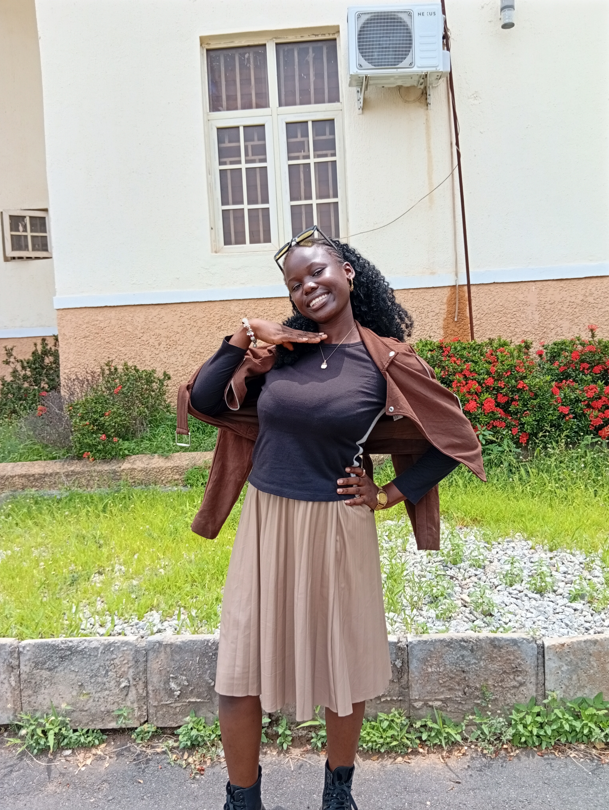
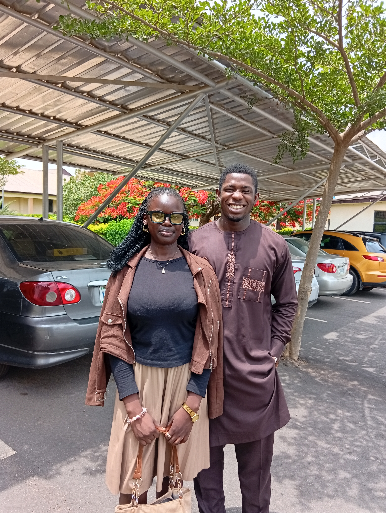

Ruth
Every pose held its own little kind of love.
For my babe Ruth: a little photo book from the courtyard, the flowers, the sunlight, and the moment we finally stepped into the frame together.

Courtyard
The courtyard became beautiful because you were in it.
I love how these first photos feel calm and confident, like the whole place paused for you. Brown jacket, beige skirt, black boots, and that gentle look that makes an ordinary afternoon feel special.


Glow
You made the simple background feel styled.
The wall, the windows, the flowers, the grass - everything stayed simple, but you gave it presence. These frames are proof that beauty does not have to shout.




Details
That tote, those boots, that jacket - all Ruth.
There is something sweet about the details: the brown jacket resting on your shoulders, the skirt moving softly, the tote in your hand, and your calm expression tying it all together.


Laugh
Your laugh made the whole page lighter.
This is the part of the shoot that feels alive - the jacket lifted, the smile opening, the day becoming playful. It is impossible to look at these and not smile back.




Together
The best part was standing beside you.
After all the beautiful portraits, this is where the story changes from admiring you to standing with you. Same day, same colors, same smiles - now the memory has both of us in it.


Poise
The first pose still says so much.
Coming back to this frame feels right because it holds the whole mood: gentle, stylish, grounded, and quietly powerful. Ruth, you did not just take pictures - you gave the day character.
Looking
Even when you look away, the photo still points to you.
Some of my favorite frames are the quiet ones. You are not trying too hard here; you are just present, thoughtful, and beautiful in a way the camera could not miss.
Favorite
Ruth, this is the picture I want to keep returning to.
The portraits are beautiful because they show you. These final photos are beautiful because they show us - close, happy, dressed in the same warm tones, and keeping one more sweet memory from May 12.
I love you, Ruth. Like the Bible says, love is patient and kind; that is the love I want to keep giving you - gentle, faithful, and always choosing you.